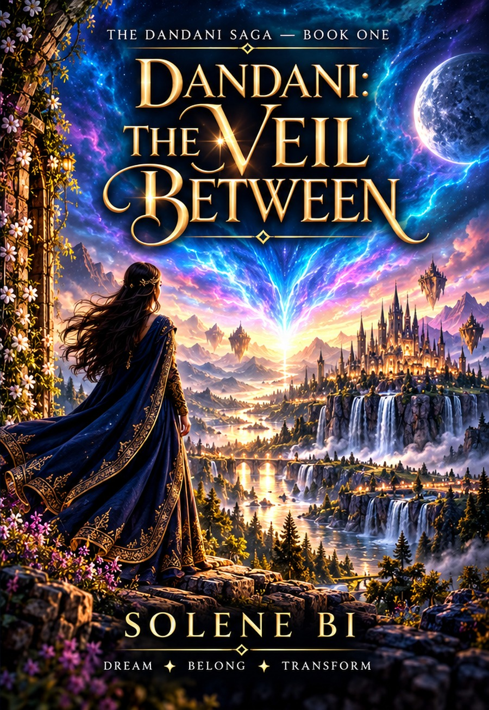
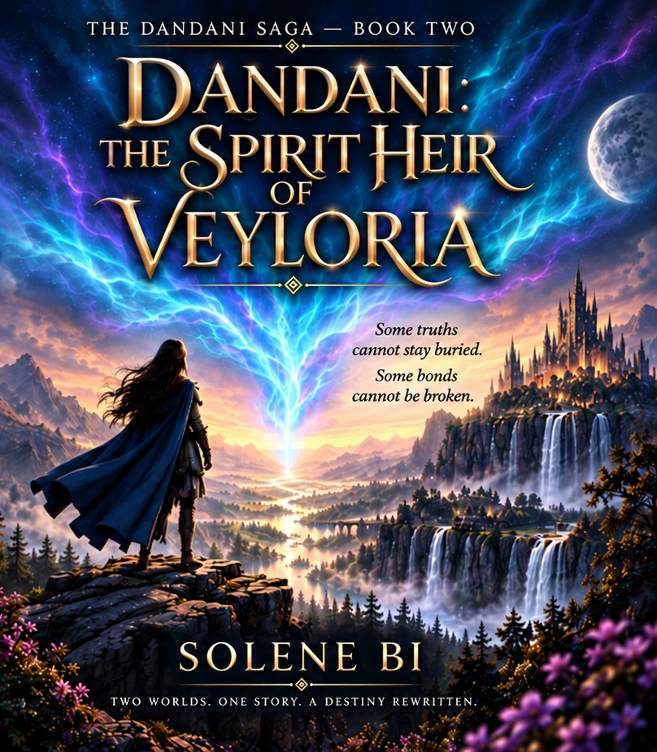

Dandani: The Veil Between
The beginning of a journey between worlds.
Book One →ONE SOIL PRODUCTIONS
Stories created to move between worlds, mediums and generations.
Enter the Studio ↘THE STUDIO
ONE SOIL PRODUCTIONS develops original stories across literary and cinematic forms. We build worlds, characters and narratives designed to live beyond a single page or screen.
Our work begins with a simple belief: powerful stories can create space for imagination, empathy and connection.
Discover our approach →01 / CREATIVE STUDIO
From the first spark of an idea to a fully imagined universe, we develop original intellectual property with a strong visual and narrative identity.
FLAGSHIP PROJECT
I — IV
A four-book fantasy literary saga and cinematic universe exploring identity, belonging, memory, forbidden connection and the possibility of worlds becoming greater without destroying one another.
Explore the Saga ↗THE DANDANI SAGA
The beginning of a journey between worlds.
Book One →Inheritance, identity and the awakening of a deeper legacy.
Book Two →When two worlds can no longer remain separate.
The consequences of a world transformed by connection.

BOOK ONE OF THE DANDANI SAGA
Two worlds. One destiny. A choice that changes everything.
Goci came to Dandani to disappear. Instead, the town noticed her the moment she arrived.
An ancient fountain showed her a place that shouldn’t exist. And Avelon — a man born of two worlds — found her, though he was never supposed to want anything as human as her.
Then came Solan, the first child ever born from a bond the old laws call impossible. When Solan is taken in the night, Goci does the one thing no human in Dandani’s long, half-forgotten memory has ever managed. She crosses the veil to get him back.
What would you risk to bring your child home?
On the other side waits more than her son: a Council that fears what he represents, a prophecy still being written, and a truth about the boundary between worlds that neither realm has been willing to face.
The veil was never a wall. Someone just needed to be brave enough to find out what it actually was.
Fantasy · Romance · Found Family

BOOK TWO OF THE DANDANI SAGA
Eleven generations chose silence. She’s done inheriting it.
Goci finally has the life she risked everything for. A son. A husband. A home in a world that once called her impossible.
Then a stranger’s voice cuts through a crack in the sky and calls her sister — the one word her whole family spent generations making sure she’d never hear.
Eleven generations of women in her family found each other before her. Eleven times, they let go rather than risk what completing the bond might unleash — a wound old enough to nearly unmake two entire worlds, the last time anyone tried. Goci already knows the cost of choosing fear. She chose it once, and lost years she can’t get back.
What would you risk, to finally know the whole truth about who you are?
To find her sister, she has to cross back into the life she left behind, and finish what eleven generations before her couldn’t survive — even if it means waking something that has been alone in the dark since before either world existed.
Fantasy · Romance · Found Family
COMING NEXT
I — V
A new five-book fantasy series by Solene Bi, in development. Seers, doors and the prophecies that bind them.
See the Series ↗OUR PHILOSOPHY
“Stories can cross the borders
that people cannot.”
ONE SOIL PRODUCTIONS
WHAT WE CREATE
Original intellectual property with the potential to move fluidly across literature, film, digital storytelling and future media.
Literary works, story worlds and original IP.
Visual storytelling shaped by narrative first.
Short-form stories built for today's audiences.
LET'S TALK
For publishing, creative collaborations, production inquiries or conversations about original IP, we'd love to hear from you.
Start a Conversation ↗